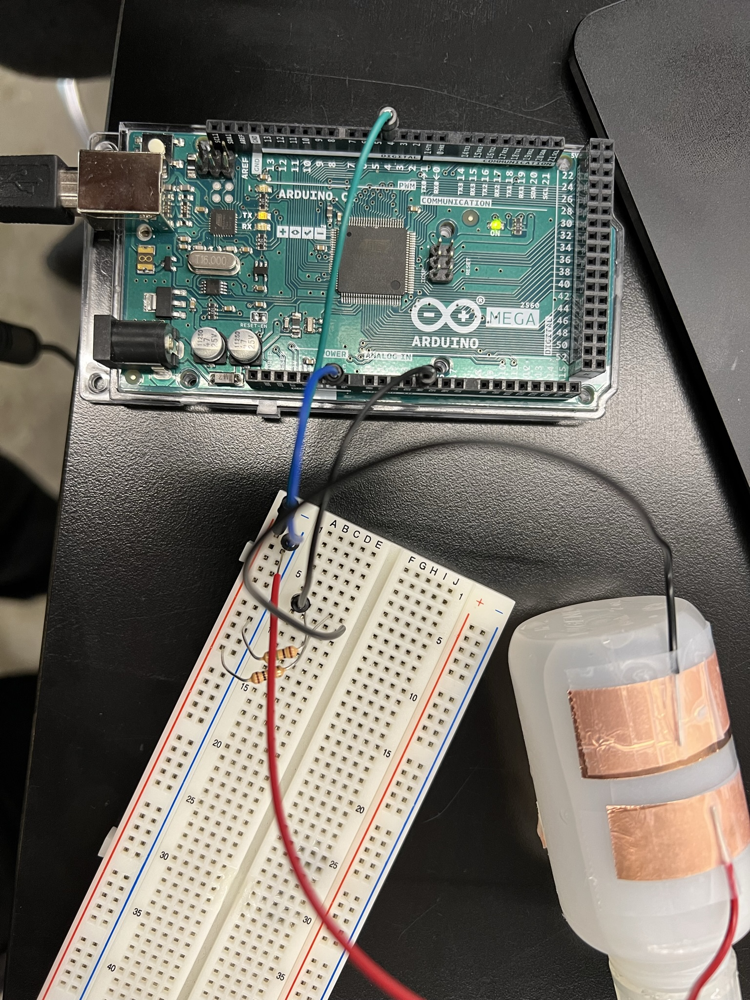

Mustafa Omran: Electronic Input Devices
<h5>For this week's topic on electronic input devices, the class experimented with various sensors like heat sensors, accelerometers, gyroscopes, hall effect magnetic sensors and much more. We then attempted to recreate one of said sensors with a capacitor approach using two contuctive sheets.</h5><br>
<br><hr style="border-top: dotted 5px;"><br>
<h5>As mentioned in my final project page, I did not have an idea as to what I wanted to do. However, during this assignment, after seeing some new sensors and learning about what they could do, I got the idea of making a hand-movement accelerometer controlled overengineered car since I build a car for the microcontroller programming week of this class.</h5>
<br><h3>MPU 6050 (Accelerometer/Gyroscope)</h3><br><h4><b>&emsp;&emsp;Accelerometer</b></h4><h5>&emsp;&emsp;&emsp;&emsp;An accelerometer is a device that measures gravitational acceleration. An accelerometer works by sensing static forces like gravity or &emsp;&emsp;&emsp;&emsp;dynamic forces like vibrations and seeing how they change. For my final project, I will need an accelerometer to add extra controls to &emsp;&emsp;&emsp;&emsp;the car. For example, I could make it where if a user pulls their hand backwards at a certain speed, the car would break</h5><br><br><h4><b>&emsp;&emsp;Gyrosope</b></h4><h5>&emsp;&emsp;&emsp;&emsp;A device that uses the physics principles of angular momentum to output the orientation of an object. Gyroscopes measures &emsp;&emsp;&emsp;&emsp;rotational velocity (rad/s) which is the change of the angular position over time along the X, Y, and Z-axis (roll, pitch, and yaw). This &emsp;&emsp;&emsp;&emsp;sensor would be very useful for my final project because it would allow me to sense the direction of the user's hand and control the &emsp;&emsp;&emsp;&emsp;car accordingly.</h5>
<br><br><br><h5>To make the sensor have a purpose for this assignment, I carefully studied the serial plot of the values the MPU was inputing to the Arduino in order to create a program that advances the motor when leaning sensor forward and stopping it when leaning sensor backwards.</h5>
<br><br><h3>Graph for Sensor Activated Motor</h3>
<h5>The blue line indicates the tilt upwards or downwards. When the sensor is tilted up, the line goes up and when the sensor is tilted down, the line goes downwards</h5>
<img src="../images/ElectronicInput/Screenshot (14).png" width="600" alt="Graph">
<br><br><h3>Code for Sensor Activated Motor</h3>
<pre><code class="language-aruino">
#include Adafruit_MPU6050.h
#include Adafruit_Sensor.h
#include Wire.h
Adafruit_MPU6050 mpu;
const int 3 = A1A;
const int 4 = A1B;
void setup(void) {
Serial.begin(115200);
pinMode(A1A, OUTPUT);
pinMode(A1B, OUTPUT);
digitalWrite(A1A, LOW);
digitalWrite(A1B, LOW);
while (!Serial) {
delay(10); // will pause Zero, Leonardo, etc until serial console opens
}
if (!mpu.begin()) {
Serial.println("Failed to find MPU6050 chip");
while (1) {
delay(10);
}
}
mpu.setAccelerometerRange(MPU6050_RANGE_16_G);
mpu.setGyroRange(MPU6050_RANGE_250_DEG);
mpu.setFilterBandwidth(MPU6050_BAND_21_HZ);
Serial.println("");
delay(100);
}
void loop() {
/* Get new sensor events with the readings */
sensors_event_t a, g, temp;
mpu.getEvent(&a, &g, &temp);
if (g.gyro.x <= -8) {
digitalWrite(A1A, HIGH);
} else if (g.gyro.x >= 8) {
digitalWrite(A1A, LOW);
digitalWrite(A1B, LOW);
}
/* Print out the values */
Serial.print(a.acceleration.x);
Serial.print(",");
Serial.print(a.acceleration.y);
Serial.print(",");
Serial.print(a.acceleration.z);
Serial.print(", ");
Serial.print(g.gyro.x);
Serial.print(",");
Serial.print(g.gyro.y);
Serial.print(",");
Serial.print(g.gyro.z);
Serial.println("");
delay(10);
}
</code></pre>
<h3>Circuit of Sensor Activated Motor</h3>
<h3>Video of Sensor Activated Motor</h3>
<video controls width="650">
<source src="../images/ElectronicInput/IMG_0074.mp4" type="video/mp4">
</video>
<br><br><hr style="border-top: dotted 5px;"><br><br>
<h3><b>Other Input Devices</b></h3>
<h5>To further increase my knowledge and to help with the acquiring of new ideas, I decided to complete 2 other projects on input devices. My first was the car I built for the week on Microcontroller Programming. I used a piezo sensor in order to activate the car. I did however quickly realize that this method was not quite efficient as I had to physically tap the vehicle. Which is when I discovered microphones. Microphones are a more accurate was of dealing with input activated circuits that piezoelectric sensors and have the extra perk of being hands-free which could reduce wear and tear on the project since knocking on said project won't be necessary.</h5>
<br><br><h3>Circuit</h3>
<br><br><h5>Without LED</h5>
<br><br><h5>With LED</h5>
<video controls width="600">
<source src="../images/ElectronicInput/IMG_0064.mp4" type="video/mp4">
</video>
<pre><code class="language-aruino">
const int sampleWindow = 50; // Sample window width in mS (50 mS = 20Hz)
unsigned int sample;
const int LED = 8;
void setup()
{
Serial.begin(9600);
pinMode(LED, OUTPUT);
digitalWrite(LED, LOW);
}
void loop()
{
unsigned long startMillis= millis(); // Start of sample window
unsigned int peakToPeak = 0; // peak-to-peak level
unsigned int signalMax = 0;
unsigned int signalMin = 1024;
// collect data for 50 mS
while (millis() - startMillis < sampleWindow)
{
sample = analogRead(0); //reading DC pin from pin A0
if (sample < 1024) // toss out spurious readings
{
if (sample > signalMax)
{
signalMax = sample; // save just the max levels
}
else if (sample < signalMin)
{
signalMin = sample; // save just the min levels
}
}
}
peakToPeak = signalMax - signalMin; // max - min = peak-peak amplitude
Serial.println(peakToPeak);
if (peakToPeak >= 8) {
digitalWrite(LED, HIGH);
delay(2000);
digitalWrite(LED, LOW);
}
}
</code></pre>
<br><br><hr style="border-top: dotted 5px;"><br><br>
<h3><b>Capacitor Approach</b></h3>
<h5>I attempted to recreate an MPU with a capacitor based approach. I used the bottle tilt sensor example as it was the closest to my digital sensor. I then added a buzzer to create an alarm system to warn user if the bottle was spilling (certain tilt angle). Overall, I heard from some classmates that the capacitive was a better solution for the project they were doing. In my case, the capacitor technique actually worsened my project because it wasn't as acurate as an actual MPU. My bottle tilt sensor was only able to detect movement in one way and did not have the ability to mimc an accelerometer.</h5><br><br>
<h3>Video of Bottle Tilt Sensor</h3>
<video controls width="600">
<source src="../images/ElectronicInput/IMG_0077.mp4" type="video/mp4">
</video>
<video controls width="600">
<source src="../images/ElectronicInput/IMG_0005.mp4" type="video/mp4">
</video>
<br><br><h3>Circuit of Capacitor-Based Approach</h3>

<br><br><br>
<cite><a style="color: #0645AD" href="https://randomnerdtutorials.com" target="_blank">Part of the first code section was inspired by Random Nerd Tutorials</a></cite><br>
<p style="text-align: right;">&copy; 2022 Mustafa Omran</p>